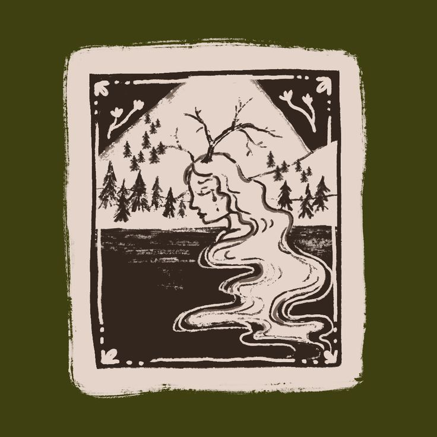
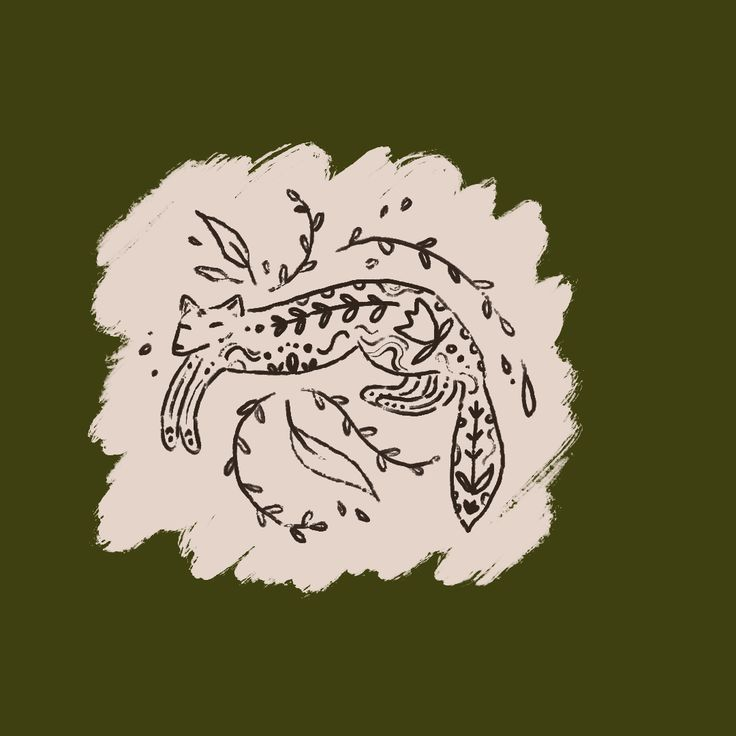
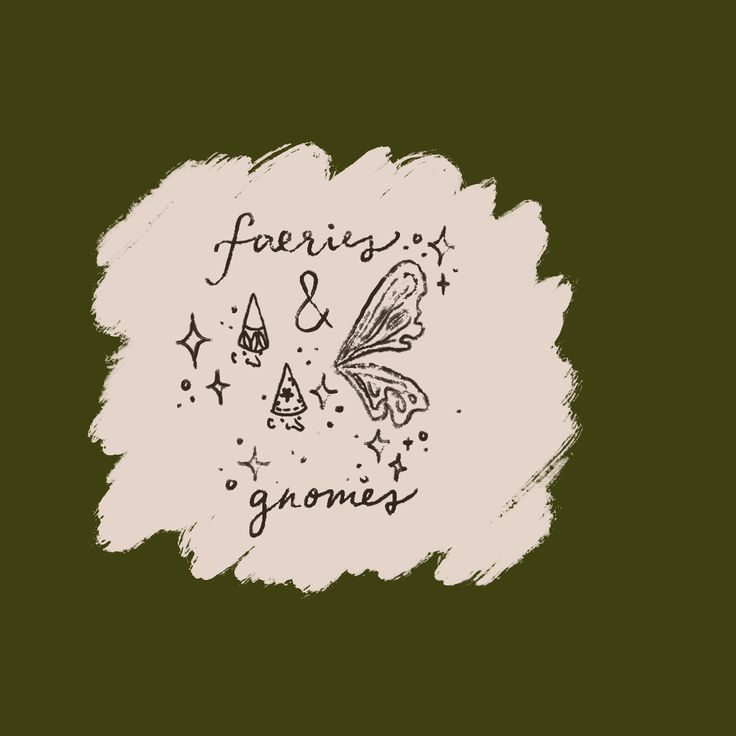
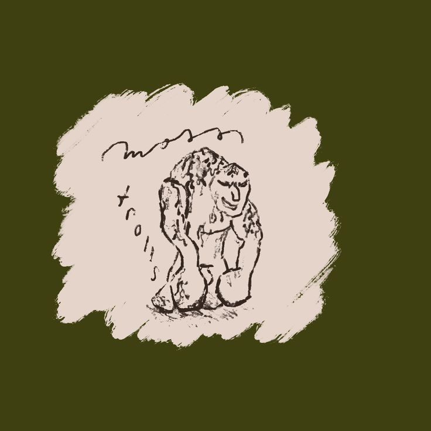
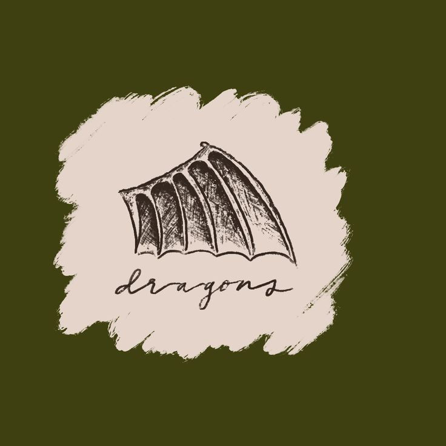

The project has been done using the program Twine, which allows users to create their own online interactive stories. This Twine story is inspired by fantasy genres and call to adventure narratives. The art within the story is drawn digitally using Procreate. The tonal color palatte is inspired by relief printing and folk art.
The narrative follows the main character in the story, Mara, through an adventure as she travels past her village walls and into the mysterious forest. Although she is the main character, her image is not included in the illustrations so readers can imagine their own interpretations.
Another important character in the story is Sylvana, who is a magical goddess within the forest. She is inspired by mythological tales and forest spirits.
The knights from the faraway kingdom are the antagonists in the story.
Supporting characters in the story were inspired by fantasy and folklore art, where much of the creatures have detailed whimsical markings.
   